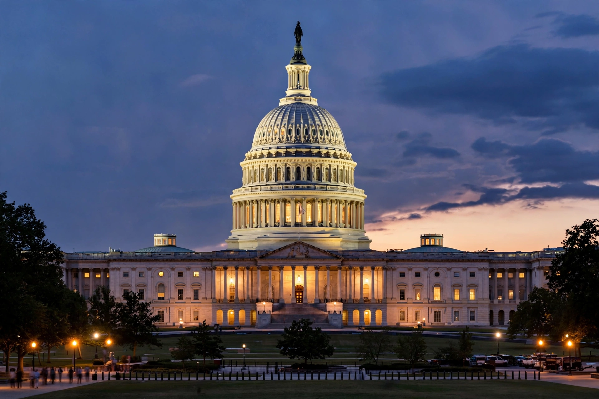

Ethics in Government Act
| Ethics in Government Act of 1978 | |
|---|---|
 | |
| Enacted | October 26, 1978 |
| Signed by | President Jimmy Carter |
| Citation | Pub. L. 95–521 |
The Ethics in Government Act of 1978 is a United States federal law enacted in the aftermath of the Watergate scandal to promote honesty and integrity in government. It requires financial disclosure by senior officials in all three branches of government, restricts lobbying by former officials, created the U.S. Office of Government Ethics, and established the mechanism for appointing an independent counsel (later called a special counsel) to investigate wrongdoing by high-ranking executive officials.
Provisions
The Act requires the President, Vice President, members of Congress, federal judges, and senior executive-branch employees to file annual public reports disclosing their income, assets, gifts, and liabilities. It also imposes "revolving door" restrictions, barring former officials from lobbying their old agencies for a period after leaving office. Title VI of the Act authorized the Attorney General, upon receiving specific information of a serious federal crime by a covered official, to request that a special panel of judges appoint an independent counsel with broad investigative authority.
Independent counsel investigations
The independent counsel provisions were used in investigations including the Iran–Contra affair and the Whitewater controversy that led to the impeachment of President Bill Clinton. Critics from both parties argued the mechanism produced runaway investigations. After the statute was reauthorized several times, Congress allowed the independent counsel provisions to expire on June 30, 1999; the Justice Department thereafter relied on its own special counsel regulations.
Legacy
The financial-disclosure framework of the Act remains in force and has been amended repeatedly, including by the Ethics Reform Act of 1989 and the STOCK Act of 2012. It stands as a central legislative response to the abuses exposed during Watergate, alongside the ruling in United States v. Nixon.